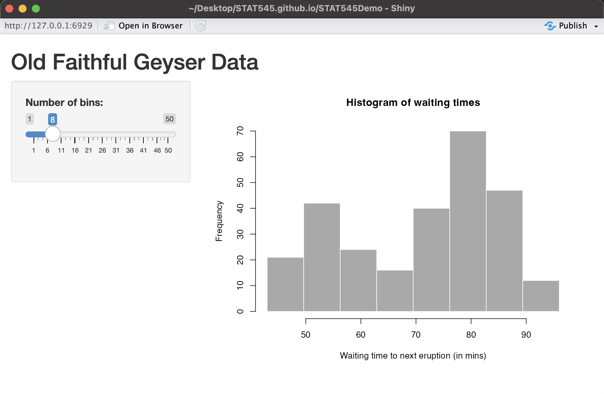
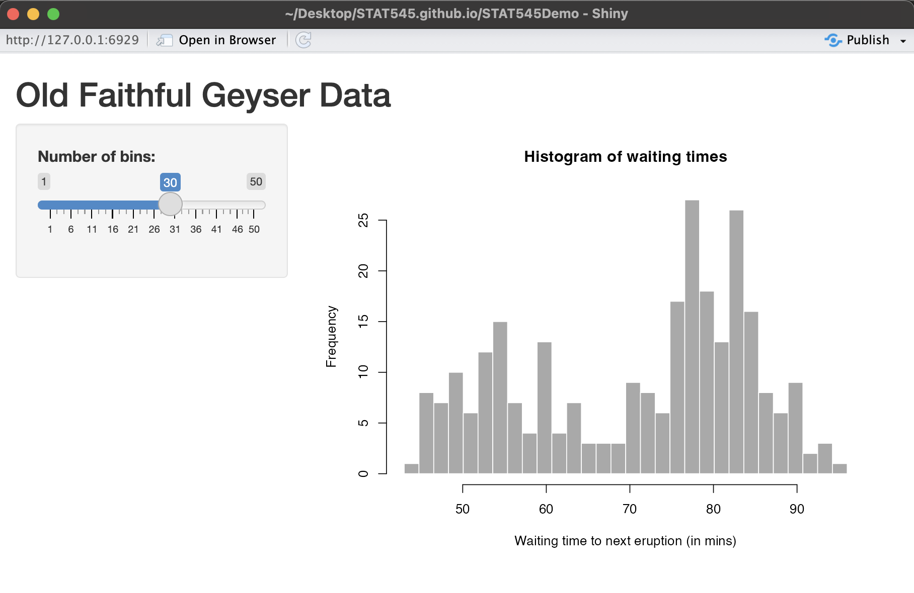

Lecture 10: Dashboards with R Shiny
November 4, 2025
This topic aims to provide you with a foundation for making a shiny app. From this topic, students are anticipated to be able to:
develop the user interface of a shiny app from scratch,
develop interactivity using widgets in a shiny app,
deploy a shiny app to shinyapps.io,
create interactive Shiny R Markdown documents (embed shiny features within an Rmd file).
And possibly:
Make an interactive plot with plotly
Make an interactive data table with the
DTpackage
We will spend two classes creating a Shiny dashboard together.
Video Lecture
Lecture Slides
Why Dashboards?
Dashboards allow users to get real time (and often customizable) overviews of information. Dashboards can be used for monitoring, measuring, analyzing, and presenting data.
R Shiny
Shiny is an open-source R package that allows users to create interactive web applications directly from R without needing to learn traditional web development languages like HTML, CSS, or JavaScript.
Here are some examples of R Shiny Dashboards:
Today, we’ll be replicating this dashboard to explore BS Liquor Store prices, from Dean Attali:
To use Shiny, install it in your R Console with install.packages("shiny").
Initialize the Shiny App
There are three basic components to a Shiny app:
the user interface (UI) (the appearance of the app)
a server (which does the app’s computations)
the app (assembles the app combining the UI and the server)
A basic Shiny app may take the following form:
library(shiny)
ui <- fluidPage()
server <- function(input, output) {
}
shinyApp(ui = ui, server = server) #do not include code past this pointTo generate a Shiny App, you can either go to “File” > “New File” > “Shiny Web App” in RStudio which will generate a template for you with a working example, or you can save the above code in a single file called “app.R”.
If you generated the template using R Studio, the following code will appear:
library(shiny)
# Define UI for application that draws a histogram
ui <- fluidPage(
# Application title
titlePanel("Old Faithful Geyser Data"),
# Sidebar with a slider input for number of bins
sidebarLayout(
sidebarPanel(
sliderInput("bins",
"Number of bins:",
min = 1,
max = 50,
value = 30)
),
# Show a plot of the generated distribution
mainPanel(
plotOutput("distPlot")
)
)
)
# Define server logic required to draw a histogram
server <- function(input, output) {
output$distPlot <- renderPlot({
# generate bins based on input$bins from ui.R
x <- faithful[, 2]
bins <- seq(min(x), max(x), length.out = input$bins + 1)
# draw the histogram with the specified number of bins
hist(x, breaks = bins, col = 'darkgray', border = 'white',
xlab = 'Waiting time to next eruption (in mins)',
main = 'Histogram of waiting times')
})
}
# Run the application
shinyApp(ui = ui, server = server)You can click the “Run App” button to explore the demo. We see that there is a slider which the user can manipulate which changes the number of bins used to produce a histogram, which is updated live!
For example, if you set the number of bins to 8, you will see:

Or you can slide the number of bins to 30 and you should see:

We will go through the basics of this demo app, and then build another from scratch.
For more complex apps, you can save the UI and server separately so long as they exist in the same directory. More info here.
Build the UI
Inside of the fluidPage() function, you can define and format different elements that will be used to build your Shiny app. For example, in the pre-generated example provided by R Studio, we have the following:
# Define UI for application that draws a histogram
ui <- fluidPage(
# Application title
titlePanel("Old Faithful Geyser Data"),
# Sidebar with a slider input for number of bins
sidebarLayout(
sidebarPanel(
sliderInput("bins",
"Number of bins:",
min = 1,
max = 50,
value = 30)
),
# Show a plot of the generated distribution
mainPanel(
plotOutput("distPlot")
)
)
)We see that within the fluidPage() function, we’ve defined a title and a sidebar with a slider that the user can manipulate the change around the number of bins in the histogram we wish to generate (this is an input that we will use to produce a plot). In the main panel (the main part of the app where the plot is shown in the images above), we are going to output a plot, which we will define in the server() function later. Here, we are just telling Shiny what goes where, but not calculating anything. There are more options for the UI that we will explore in our demo later.
Build the Server
As stated previously, we’ve set up the UI of the app but we haven’t really calculated anything. Recall the code from the R Studio template:
# Define server logic required to draw a histogram
server <- function(input, output) {
output$distPlot <- renderPlot({
# generate bins based on input$bins from ui.R
x <- faithful[, 2]
bins <- seq(min(x), max(x), length.out = input$bins + 1)
# draw the histogram with the specified number of bins
hist(x, breaks = bins, col = 'darkgray', border = 'white',
xlab = 'Waiting time to next eruption (in mins)',
main = 'Histogram of waiting times')
})
}We have a function that takes some input (in our case, the number of bins the user chose via the slider), and it outputs a histogram using the selected number of bins. Here, hist() is generating a histogram - the default is just not using ggplot2 like we’ve used before in this class.
Generate the App
The final part of the code is
# Run the application
shinyApp(ui = ui, server = server)which combines everything together and allows you to interact with the app!
Demo: BC Liquor Store Prices
We will now follow along with this tutorial by Dean Attali that creates a dashboard exploring alcohol prices and alcohol content. We will be slowly building this app from scratch to get a better sense of Shiny.
Deploy the App to Shinyapps.io
Shinyapps.io allows you to host Shiny apps online! Here’s how to do it:
Run
install.packages('rsconnect')andlibrary(rsconnect)in your Console.Go to https://www.shinyapps.io/ and create an account (click Sign Up). Follow the instructions. You can use the same username as your GitHub account if you’d like to be consistent.
Click Show Secret, and copy the Account Authorization into your R Console, with
filled in rsconnect::setAccountInfo(name='grcetmpk', token='E60FD358D5080B343605C63AE78C7858', secret='<SECRET>')Deploy the app by running in your Console:
rsconnect::deployApp('[PATH TO YOUR APP FOLDER]')
for example, to deploy my BC Liquor demo app, I’d insert the path
/Users/gracetompkins/Desktop/BCLiquor(which is the folder where app.R exists).This may take a few minutes.
On your shinyapps.io profile, you should see a dashboard of your apps, and see that yours has been deployed.
Tip: Include a clickable link to your app in the README so others can easily try it out (i.e., “The app can be viewed at [https://grcetmpk.shinyapps.io/bcliquor/])https://grcetmpk.shinyapps.io/bcliquor/)”.
Additional Resources
- Video lecture: How to Make a Shiny App in R
- “Mastering Shiny” by Hadley Wickham gives a more comprehensive treatment.
- The official shiny site has tutorials, a gallery, and other goodies.
- For deploying shiny apps, check out https://www.shinyapps.io/
- For shiny documents (= R Markdown + shiny), see Chapter 19 of Yihui’s R Markdown book.
- For testing your shiny app, check out the shinytest and reactlog packages.
- For further cutting down on code repetition by “functionizing” your shiny app, check out Emily Riederer’s beginner’s guide to Shiny modules for a gentle introduction and Chapter 19 of the “Mastering Shiny” book for a full treatment.
Other dashboard tools besides Shiny (but not in R):
With python: plotly dash. Check out the main website, or this Medium post introducing the tool.
With javascript: D3, a tremendously powerful tool with a steep learning curve (especially if you don’t know javascript).